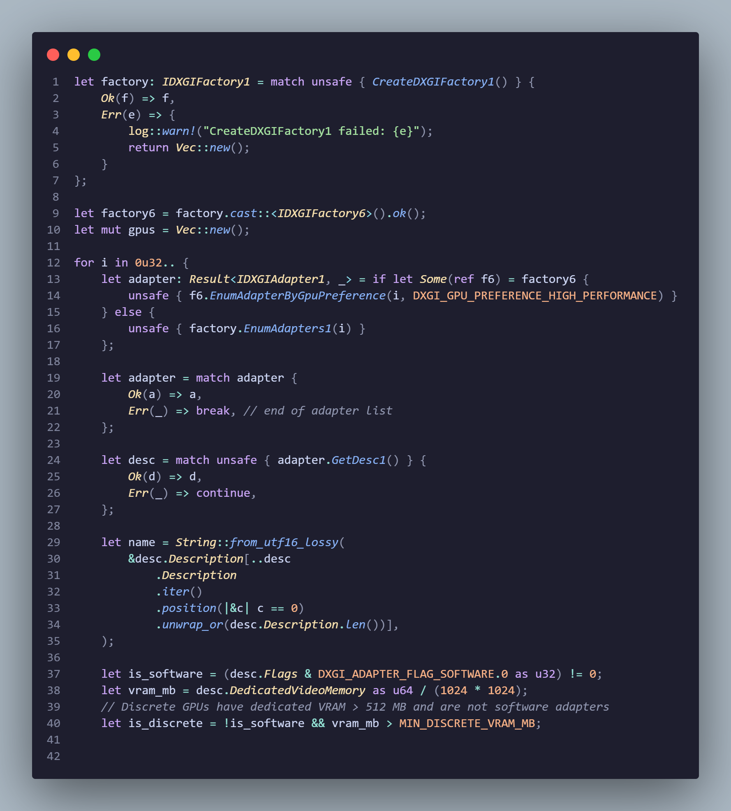
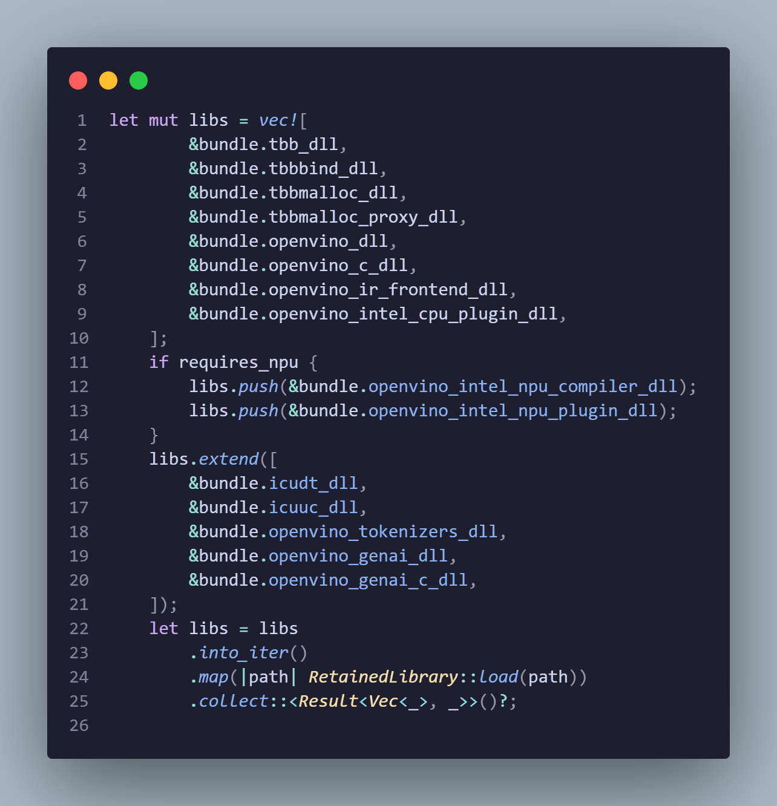
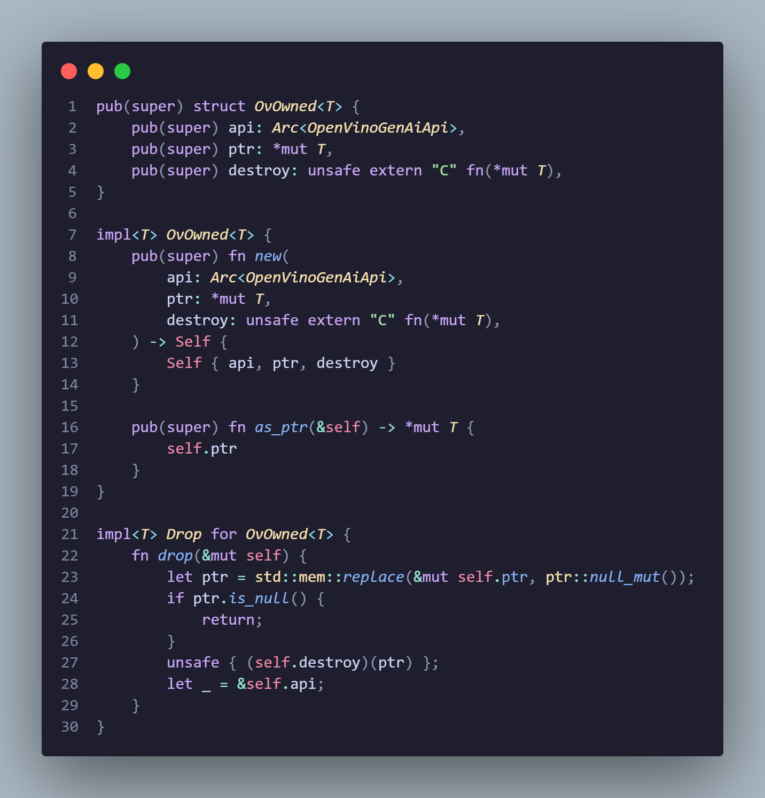
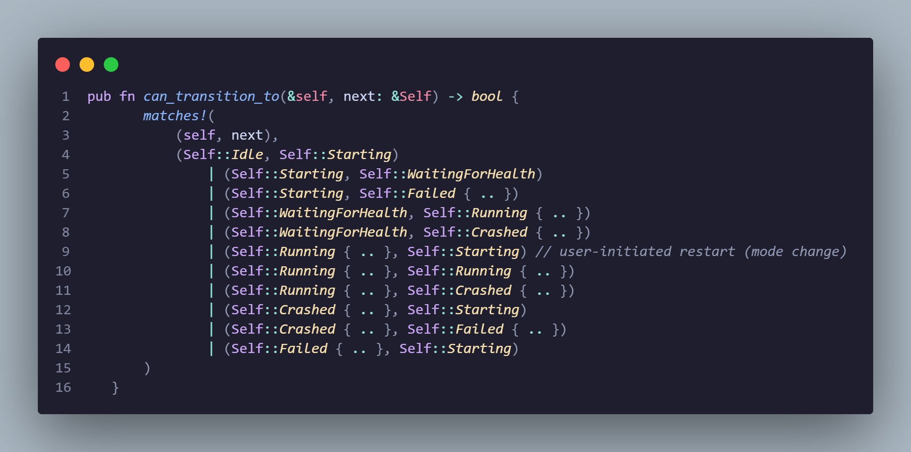

The SmolPC Engine
Overview and Motivation
The SmolPC inference engine is a standalone local HTTP server that runs large language models on student hardware. It is a separate process from the Tauri desktop app — it survives app restarts, isolates native FFI crashes from the UI, and can be shared across multiple consumers. The engine listens on localhost:19432 with Bearer token authentication and exposes an OpenAI-compatible API surface with Server-Sent Events (SSE) streaming.
The constraint that drives every design decision on this page: 8 GB of RAM minimum, fully offline, no cloud dependency, no data collection. The LLM itself consumes 1.5–4 GB of RAM depending on model size. Every megabyte the infrastructure consumes is a megabyte unavailable for inference.
Why a Separate Process?
The most important architectural decision in the engine is that inference runs in a separate OS process rather than inside the Tauri application via in-process FFI calls. OpenVINO and ONNX Runtime are C libraries loaded at runtime. A segfault inside the FFI layer kills the process. If that process is the Tauri app, the student loses their entire UI — every open conversation, every unsaved context, gone. With a separate engine process, the supervisor in the Tauri backend detects the crash and auto-restarts the engine while the UI remains fully responsive. The student sees a brief "reconnecting" state, not a crash dialog.
Alternatives we evaluated and rejected:
- In-process FFI — faster IPC, but a single C-level segfault takes down the entire application. Unacceptable for a tool students rely on during lessons.
- Unix domain sockets / named pipes — marginal latency improvement over TCP loopback, but loses HTTP debuggability. No benefit for localhost communication.
- gRPC — adds a protobuf compiler build dependency, protocol complexity, and a binary wire format that cannot be inspected with
curl. No benefit over HTTP + SSE for a localhost-only server.
The HTTP approach also provides practical benefits beyond crash isolation:
- Debuggable. Any HTTP client works. A developer can probe the engine with
curlwithout compiling Rust. - Survives app restarts. The engine process persists after the app closes. Reopening the app reconnects instantly — no model reload, no 30-second startup delay.
- Shareable. Multiple consumers can hit the same engine process. This enables the future launcher architecture where the GIMP connector, Blender connector, and Code Helper all share one loaded model.
- Standard protocol. The OpenAI-compatible wire format means any client that speaks that protocol can use the engine as a drop-in local backend.
Crate Architecture
The engine is split across five Rust crates with clear separation of concerns. The dependency flow is deliberately one-directional: smolpc-engine-core has no workspace dependencies, smolpc-engine-host depends on core, smolpc-engine-client is fully independent, and the TTS sidecar is isolated in its own workspace. This means core is testable without a network, host is testable without the desktop app, and client is testable without a running engine.
smolpc-engine-core
Foundation library with zero workspace dependencies. This crate owns everything that does not require a network socket: hardware detection via DXGI (~14 ms), NPU driver probing, RAM enumeration via GlobalMemoryStatusEx, the InferenceBackend enum (Cpu, DirectML, OpenVinoNpu), custom FFI wrappers for the OpenVINO GenAI C API and ONNX Runtime GenAI C API (no published Rust bindings exist for either — these are entirely hand-written), centralised DLL loading with CI-enforced source scanning, and a model registry with RAM-based selection thresholds.
smolpc-engine-host
The binary crate. An Axum HTTP server exposing 13 endpoints with semaphore-based concurrency control: a generation semaphore (capacity 1 — only one LLM generation at a time), a configurable queue semaphore (default capacity 3, returns HTTP 429 when full), and a voice semaphore (capacity 1 — serialises STT and TTS). An atomic generating flag provides fast-path checking without acquiring the semaphore. The host manages background hardware probing, idle timeout monitoring, ChatML template formatting, and a streaming thinking-tag filter that strips <think>...</think> blocks before tokens reach the user.
smolpc-engine-client
Consumer library for any application that needs to talk to the engine. Key exports: spawn_engine() launches the engine as a detached process with a PID file and filesystem spawn lock; wait_for_healthy() polls until the engine is ready (60-second timeout, 250 ms polling interval); kill_stale_processes() cleans up orphaned engine processes with PID identity verification (Windows reuses PIDs aggressively, so the process name is checked before killing); EngineClient provides typed HTTP methods with SSE streaming; and RuntimeModePreference (Auto, Cpu, Dml, Npu) carries the user's backend choice from the UI to the engine.
smolpc-tts-server
Standalone text-to-speech sidecar on port 19433. This crate lives in its own Cargo workspace root (separate Cargo.toml) because it depends on a different version of the ort crate (ONNX Runtime Rust bindings) than the main engine. Cargo does not allow two versions of the same native-library-wrapping crate in one workspace when they have conflicting link requirements. The TTS server must be built with --manifest-path, not -p. It is spawned and health-checked by the engine host at 200 ms intervals with a 15-second startup budget, and respawned automatically if it becomes unhealthy.
smolpc-benchmark
CLI tool for performance testing across all three backends. Measures time-to-first-token (TTFT), tokens per second, peak memory, and CPU utilisation. Supports multi-backend comparison runs with configurable warmup and cooldown periods. Statistics computed per run: mean, median, p90, p95, and standard deviation. Outputs results in CSV and JSON formats for automated analysis.
Hardware Detection and Backend Selection
The engine must run on whatever hardware a secondary school provides: high-end Intel Core Ultra laptops with discrete GPUs and NPUs, budget machines with integrated graphics only, or anything in between. The hardware detection and backend selection system is a multi-stage state machine that probes the hardware, validates each backend through a gate chain, and caches successful decisions for instant startup on subsequent launches.
GPU Detection via DXGI
GPU enumeration uses the Windows DXGI API (IDXGIFactory6) directly, not WMI. This was a hard-won decision: the original implementation used Get-WmiObject queries, which hang for 60+ seconds on some Windows machines with unusual driver configurations or pending updates. The hang occurs inside the WMI service itself and cannot be timed out from the caller. DXGI, by contrast, completes in ~14 ms consistently — it is a direct COM call to the same API that DirectX uses, so it reports exactly what DirectML will see.
The DXGI probe follows this sequence:
- Create an
IDXGIFactory1, then attempt to cast toIDXGIFactory6for high-performance GPU preference ordering. - Enumerate all adapters, extracting per-adapter: name, vendor ID, device ID, dedicated VRAM, and software/hardware classification.
- Filter out software adapters (the Windows WARP rasteriser).
- Classify as discrete if dedicated VRAM exceeds 512 MB and the adapter is not software. This threshold is a conservative midpoint — discrete GPUs typically start at 1-2 GB of dedicated VRAM.
- Select the best candidate: discrete GPUs first, then by VRAM descending.

Critical: integrated GPU rejection. Intel UHD integrated graphics technically supports DirectML, and the DXGI probe reports it as a valid adapter. However, DirectML inference on these GPUs produces garbage logits — the output is numerical noise with no coherent text. This is detected by the preflight validation (described in Section 4), which generates a single token and inspects the logits tensor for NaN and Infinity values. When non-finite logits are detected, the backend is rejected and the engine falls through to OpenVINO CPU.
NPU and RAM Detection
NPU detection is not done through DXGI. Instead, the engine uses the OpenVINO startup probe (probe_openvino_startup), which checks whether the Intel NPU device is visible to the OpenVINO runtime and whether the driver supports the required operations. This runs asynchronously in the background during engine startup.
System RAM is queried via the Windows GlobalMemoryStatusEx API, returning total physical memory in gigabytes. This drives automatic model selection: 16 GB or more selects Qwen3 4B (if provisioned), 3–15 GB selects Qwen2.5 1.5B Instruct, and less than 3 GB falls to the smallest available model. The algorithm filters models by min_ram_gb, sorts descending, and selects the first whose model directory actually exists on disk.
Backend Selection Algorithm
Backend selection is a multi-stage decision process, evaluated in priority order:
| Stage | Condition | Behaviour |
|---|---|---|
| 1. Forced override | SMOLPC_FORCE_EP environment variable or user selection in the UI |
That backend is used unconditionally. The decision is not persisted to the cache. |
| 2. Persisted decision | Matching entry in backend_decisions.v2.json |
Reuse the cached decision, skipping the full probe and preflight. The cache key is a fingerprint of model ID, artifact fingerprint, app version, runtime versions, GPU adapter identity, NPU identity, and tuning parameters. |
| 3. Failure demotion | DirectML has failed 3 or more consecutive times | DirectML is demoted. The engine falls through to OpenVINO NPU or CPU. The failure count resets on any successful DirectML load. |
| 4. Default priority | No override, no cached decision, no demotion | DirectML (fastest on discrete GPU) then OpenVINO NPU (low power, good TTFT) then CPU (universal fallback). Each must pass its gate chain. |
Gate Chains
Each backend must pass every gate in its chain before it can be selected. If any gate fails, the backend is skipped and the next candidate in priority order is evaluated.
| Gate | DirectML | OpenVINO NPU | CPU |
|---|---|---|---|
| Hardware detected | DXGI found a discrete GPU | NPU device visible to OpenVINO runtime | Always passes |
| Artifacts available | dml/model.onnx, dml/genai_config.json, dml/tokenizer.json |
openvino/manifest.json + IR artifacts (.xml + .bin) |
Same OpenVINO IR artifacts as NPU |
| Bundle ready | ONNX Runtime + DirectML DLLs loaded | All 13 OpenVINO DLLs loaded in dependency order (15 with NPU) | OpenVINO CPU plugin DLLs loaded |
| Probe ready | — | OpenVINO startup probe completed (not still pending) | — |
| Preflight validated | Model loads and generates 1 token within 60 s | Model compiles and loads on NPU within 300 s (5 min) | CPU runtime adapter builds within 30 s |
Temporary Fallback vs. Permanent Demotion
A critical invariant in the backend selection system: a preflight timeout is never persisted as a negative decision. When a preflight times out, the result is classified as TemporaryFallback — it is not written to backend_decisions.v2.json, and the backend will be retried on the next startup. This is essential because NPU first-time compilation is expected to take 3–5 minutes. On the first launch, the 300-second preflight budget may not be enough. On the second launch, the compiled blob cache is warm and the preflight completes in seconds. If the timeout were persisted as a permanent failure, the machine would skip the NPU forever — a working piece of hardware would never be used.
Only explicit failures (init errors, runtime crashes) are persisted. Timeouts are always temporary.
Fingerprint-Based Decision Cache
Successful backend decisions are cached in backend_decisions.v2.json using a composite fingerprint as the cache key. The RuntimeBundleFingerprint is computed from: runtime family (ORT or OpenVINO), canonical file paths, file sizes, modification timestamps, and version metadata strings. It is formatted as a 16-character hex string via DefaultHasher. The cache is stored as an OnceLock<Mutex<HashMap>> — each bundle is loaded exactly once per process, and attempting to load a second bundle with a different fingerprint returns an error rather than silently mixing DLL versions.
The file is written atomically (temporary file then rename) to prevent corruption from power loss or process termination during the write.
Inference Backends
This section covers the lowest and most technically demanding layer of the engine: the custom FFI wrappers that bridge Rust to the native C inference libraries. No published Rust crate bindings exist for the OpenVINO GenAI C API or the ONNX Runtime GenAI C API. The existing openvino Rust crate covers the OpenVINO core but not the GenAI extension (LLM pipeline, streaming, chat history). The ort Rust crate covers ONNX Runtime but not the GenAI extension that provides the OgaGenerator step-by-step decoding API needed for DirectML streaming. We wrote our own FFI bindings from scratch — loading DLLs at runtime, resolving function pointers by name, and managing opaque C handles with RAII guards.
Centralised DLL Loading
All native library loading is confined to a single file: runtime_loading.rs. A CI test (runtime_loading_is_centralized) scans every .rs file in the engine workspace and fails if Library::new() or load_with_flags() appears anywhere else. This enforcement exists for three reasons:
- Windows DLL dependency order is fragile. Loading
openvino_genai_c.dllbeforetbb12.dllcauses a silent load failure because the GenAI DLL has an implicit dependency on TBB. The error message names the DLL you tried to load (openvino_genai_c.dll), not the actual missing transitive dependency (tbb12.dll), making debugging without this knowledge extremely difficult. - Load flags matter. We use
LOAD_LIBRARY_SEARCH_DLL_LOAD_DIR | LOAD_LIBRARY_SEARCH_SYSTEM32to restrict dependency resolution to the DLL's own directory plus System32. Without these flags, Windows searchesPATHand the working directory, which can silently pick up wrong-version DLLs from the user's environment. - Bundle fingerprinting prevents version skew. Each bundle gets a hash-based fingerprint. If the engine is already initialised with one bundle, attempting to load a different one returns an error rather than silently mixing DLL versions — preventing ABI mismatches that would manifest as memory corruption or undefined behaviour.
The OpenVINO DLL load sequence requires 13 DLLs for CPU-only operation, or 15 when NPU support is included. All components are pinned to OpenVINO 2026.0.0 — the runtime, GenAI extension, and tokenizers must all match. Mixing versions breaks ABI compatibility. The order is strict — reordering any entry can produce confusing "DLL not found" errors that name the wrong library.
| # | DLL | Purpose |
|---|---|---|
| 1 | tbb12.dll | Intel Threading Building Blocks runtime |
| 2 | tbbbind_2_5.dll | TBB binding library |
| 3 | tbbmalloc.dll | TBB memory allocator |
| 4 | tbbmalloc_proxy.dll | TBB malloc proxy |
| 5 | openvino.dll | OpenVINO core runtime |
| 6 | openvino_c.dll | OpenVINO C API wrapper |
| 7 | openvino_ir_frontend.dll | IR model format parser |
| 8 | openvino_intel_cpu_plugin.dll | CPU inference plugin |
| 9 | openvino_intel_npu_compiler.dll | NPU model compiler (NPU only) |
| 10 | openvino_intel_npu_plugin.dll | NPU inference plugin (NPU only) |
| 11 | icudt70.dll | ICU data (Unicode support for tokenisers) |
| 12 | icuuc70.dll | ICU common library |
| 13 | openvino_tokenizers.dll | Tokeniser extension |
| 14 | openvino_genai.dll | GenAI LLM pipeline |
| 15 | openvino_genai_c.dll | GenAI C API (the API we call) |
Steps 9–10 are conditionally included only when the NPU is the target device. CPU-only initialisation skips them, which avoids loading NPU driver dependencies on machines without an NPU. ONNX Runtime is simpler: 2 support DLLs (onnxruntime.dll, onnxruntime_providers_shared.dll), with the GenAI and DirectML DLLs loaded later during API struct construction.

runtime_loading.rs — each library is loaded in strict dependency order through RetainedLibrary::load(). The NPU compiler and plugin DLLs (steps 9–10) are conditionally included only when requires_npu is true.OpenVINO GenAI Backend (CPU + NPU)
The OpenVINO wrapper loads ~28 C API symbols from openvino_c.dll (error reporting) and openvino_genai_c.dll (pipeline lifecycle, generation config, chat history, streaming, performance metrics). All functions return an OvStatus integer where 0 means success. Errors are retrieved via ov_get_error_info(status) and ov_get_last_err_msg(), which return C strings converted to Rust Result types by the check_status helper. Every _create function has a corresponding _free destructor — these are the RAII targets for OvOwned<T>.
RAII for C handles. Every opaque C pointer is wrapped in OvOwned<T>, a generic RAII guard that calls the stored destroy function on drop. The critical design detail is the ownership chain: OvOwned holds an Arc<OpenVinoGenAiApi>, which holds RetainedLibrary handles, which hold Arc<Library> references to the loaded DLLs. This ensures that function pointers are never called after their DLL has been unloaded — the destroy function is always valid when Drop::drop executes.

OvOwned<T> — the RAII guard for opaque C handles. The api field keeps the DLL loaded for the lifetime of the handle. On drop, the pointer is replaced with null before calling the destroy function to prevent double-free.Pipeline creation differs between CPU and NPU. The CPU path calls ov_genai_llm_pipeline_create(model_dir, "CPU", 0, &pipeline) where 0 means no extra properties. The NPU path uses the variadic C API with 6 string arguments: ov_genai_llm_pipeline_create(model_dir, "NPU", 6, &pipeline, "CACHE_DIR", cache_path, "MAX_PROMPT_LEN", "2048", "MIN_RESPONSE_LEN", "1024"). The count parameter (6) tells the API how many variadic string arguments follow. Getting this count wrong causes undefined behaviour — an incorrect count reads garbage from the stack.
Streaming uses a C callback mechanism. The StreamerCallback struct passes a function pointer to the C library. On each generated token, the callback receives the token as a C string and returns a status: Running (0) to continue, Stop (1) to finish gracefully, or Cancel (2) to abort immediately.
The Rust-side callback function implements multiple safety nets beyond the C library's own stop logic:
- Cancellation check. An
AtomicBoolflag set by the user or by a timeout. - Token limit enforcement. A counter that matches
max_new_tokens, catching cases where the C-level limit is not honoured due to pipeline bugs or ABI mismatches. - Stop string accumulation. Checks for
<|im_end|>and<|endoftext|>in accumulated text. This is a second line of defence — the NPUStaticLLMPipelinedoes not always honourstop_token_idsreliably. - Degenerate output detection. If 64 or more consecutive dots are generated, stops generation immediately. This is a sign of model collapse.
The async wrapper runs the blocking generation call in tokio::task::spawn_blocking and reads tokens from an mpsc::unbounded_channel with a 90-second watchdog timer. If no token arrives within 90 seconds (which can happen during NPU compilation on first load), the wrapper sets the cancelled flag and returns a timeout error. The watchdog resets after each token.
DirectML Backend (Discrete GPU)
The DirectML wrapper uses the ONNX Runtime GenAI C API with a fundamentally different generation model. Where OpenVINO uses a callback-based streaming API, ORT GenAI uses a step-by-step token generation loop: OgaGenerator_GenerateNextToken generates one token, OgaGenerator_GetNextTokens reads the token ID, OgaGenerator_IsDone checks for completion, and OgaTokenizerStreamDecode converts the token to text. Each iteration of this loop produces one token and sends it through the channel.
Key difference in calling convention: ORT GenAI uses extern "system" (Microsoft x64 calling convention on 64-bit Windows), while OpenVINO uses extern "C". The error pattern also differs — ORT GenAI functions return *mut OgaResult where null means success and non-null means an error with an embedded message string.
Model loading creates an OgaConfig, clears default providers, appends "dml" as the execution provider, and optionally sets a specific GPU adapter index via OgaConfigSetDecoderProviderOptionsHardwareDeviceId. This is how the engine targets a specific discrete GPU when multiple GPUs are present.
Preflight validation is the mechanism that catches garbage output on integrated GPUs. The preflight generates a single token and inspects the logits tensor:
- Encode a short prompt and generate one token with
max_length = prompt_tokens + 1. - Call
OgaGenerator_GetLogitsto access the logits tensor. - Read the tensor's element type (Float32 or Float16), shape, and data pointer.
- Compute the bounds of the last row of logits.
- Scan the last row for non-finite values (NaN, Infinity, negative Infinity).
- If any non-finite values are found, return an error with the count and first offending value.
This logits-level check is more reliable than testing the decoded text, because a single non-finite logit can propagate through softmax and produce plausible-looking but semantically wrong tokens. The check catches the problem at source.
Hung driver protection. DirectML on some GPU/driver combinations can hang indefinitely during OgaGenerator_GenerateNextToken. A 45-second watchdog sets a hung flag if the timer fires. All subsequent calls to generate_stream or run_preflight immediately return an error. Recovery requires destroying and recreating the entire model.
Backend Comparison
| Characteristic | CPU (OpenVINO) | NPU (OpenVINO) | DirectML (Discrete GPU) |
|---|---|---|---|
| TTFT | Slow (seconds) | Fast after compilation | Variable (GPU-dependent) |
| Decode speed | Slowest | Moderate | Fastest on discrete GPU |
| First load | Fast | Slow (3–5 min compilation, then cached) | Fast |
| Context window | Unlimited (within RAM) | Fixed (MAX_PROMPT_LEN 2048 tokens) | Unlimited (within VRAM) |
| Sampling | Full (temperature, top_k, top_p) | Greedy only (do_sample=false) | Full |
| Reliability | Most reliable | Driver-dependent | GPU-dependent |
| Quantisation | INT4 | INT8_SYM (Qwen3), INT4 (Qwen2.5) | INT4 |
| Calling convention | extern "C" |
extern "C" |
extern "system" |
| Error pattern | OvStatus integer (0 = OK) |
OvStatus integer (0 = OK) |
*mut OgaResult (null = OK) |
NPU Constraints
The NPU uses OpenVINO's StaticLLMPipeline, which differs from the CPU LLMPipeline in several architecturally significant ways. These constraints are the source of the most complex workarounds in the engine.
- Fixed context window.
MAX_PROMPT_LEN(2048 tokens) +MIN_RESPONSE_LEN(1024 tokens) are set at pipeline creation time and cannot be changed. ExceedingMAX_PROMPT_LENcrashes the pipeline with "unknown exception" — no graceful error, no recovery. The engine host humanises this to "conversation too long, try starting a new chat." - Greedy decoding only.
do_samplemust befalse. Temperature, top_k, and top_p are ignored.presence_penaltyis incompatible with greedy decoding. - Qwen3 INT4 crashes the NPU. Only INT8_SYM (symmetric per-channel quantisation via
nncf.compress_weights) works. INT4 is used only on CPU. - No
extra_contextAPI. The CPU path disables Qwen3's thinking mode viaov_genai_chat_history_set_extra_context({"enable_thinking": false}). The NPUStaticLLMPipelinedoes not support this API. Instead, the engine injects/nothinkinto the system message content. - Template patching required. Qwen3 ships with a Jinja chat template that enables thinking by default when
enable_thinkingis undefined. On the NPU, where we cannot setextra_context, this causes runaway generation (thinking tokens consume the entire response budget). Theensure_qwen3_nothink_templatefunction patches the Jinja condition fromenable_thinking is defined and enable_thinking is falsetonot enable_thinking is defined or enable_thinking is false. Template patch failure is a hard error that aborts NPU model loading — an un-patched template produces runaway generation on every request. - First-run compilation. The first load compiles the model to an NPU-specific blob, taking 3–5 minutes for Qwen at MAX_PROMPT_LEN=2048. The
CACHE_DIRproperty stores this blob so subsequent loads take seconds. ChangingMAX_PROMPT_LENorMIN_RESPONSE_LENinvalidates the cache.
OpenVINO 2026.0.0 bug: setting min_new_tokens >= 1 permanently suppresses EOS token detection, causing generation to run until max_new_tokens is exhausted. The wrapper explicitly skips the set_min_new_tokens call and logs a warning if a caller attempts to set it.
Unified Runtime Adapter
The InferenceRuntimeAdapter enum unifies both backends behind a single interface with two generation methods: generate_stream() takes a raw string prompt (pre-formatted ChatML) and works with both backends; generate_stream_messages() takes structured chat messages and is only supported by OpenVINO GenAI (which has native structured chat via ov_genai_llm_pipeline_generate_with_history). DirectML returns an error for structured messages because ORT GenAI does not have a native structured chat API. The engine host checks is_openvino_genai() to decide which path to use.
Engine Lifecycle
The engine process is not managed by the operating system or a generic service framework. A purpose-built supervisor actor inside the Tauri app owns the entire lifecycle: spawning, health monitoring, crash recovery, and shutdown. This section traces that lifecycle from idle to running, through failure, and back.
State Machine
The engine lifecycle is modelled as an explicit state machine with six states and validated transitions. Invalid transitions (such as Idle directly to Running) are rejected with an error log, which makes impossible states unrepresentable at runtime.
Idle --Start--> Starting --spawn--> WaitingForHealth --healthy--> Running
|
health loop (10s)
PID alive + HTTP
|
3 failures --> Crashed
|
backoff restart
1s -> 2s -> 4s
|
max 3 per 5min --> Failed (terminal)| State | Description | Carries |
|---|---|---|
Idle |
No engine running. Waiting for a Start command. |
Nothing |
Starting |
Spawn sequence in progress. | Nothing |
WaitingForHealth |
Engine process launched, polling /engine/health every 100ms. |
Nothing |
Running |
Engine is healthy and serving requests. | Current backend, model ID |
Crashed |
Engine process died or became unresponsive. | Error message, restart count |
Failed |
Max restarts exceeded. Terminal -- requires app restart or manual retry. | Error message |
The state graph includes several non-obvious cycles that are important for correctness. Running can transition back to Starting when the user changes runtime mode (the engine must restart with different DLL paths). Running can transition to Running when a status refresh updates the backend or model information. Failed can transition to Starting when the user explicitly clicks Retry. These cycles are validated by the can_transition_to() method and covered by unit tests in mod.rs.

can_transition_to() method validates every state machine transition. Invalid transitions are logged and rejected.Supervisor Architecture
The EngineSupervisor is a single Tokio background task spawned during Tauri app initialisation. It runs a select! loop that listens to three concurrent event sources, processing whichever fires first.
Why an Actor, Not Mutexes
The original design used four Mutex-guarded fields shared across Tauri commands. This produced deadlocks: a health check could run while a model load was in progress, each holding different mutexes but needing the other's. A separate bug -- the "disconnected while running" issue -- was caused by a stale EngineClient surviving a state transition because two code paths held overlapping locks.
The actor pattern eliminates both classes of bug. The supervisor has exclusive ownership of all engine process state. Commands arrive through an mpsc channel (buffer 16) and are processed one at a time, giving ordered processing with no concurrent mutation. External consumers observe state through tokio::sync::watch channels -- lock-free, no contention, any number of readers.
| Event Source | Mechanism | Fires When |
|---|---|---|
| Command channel | mpsc, buffer 16 |
Tauri command sends Start, SetRuntimeMode, SetDesiredModel, RefreshStatus, or Shutdown |
| Health check timer | 10-second interval | Only when state is Running |
| Restart delay timer | Backoff sleep (1s / 2s / 4s) | After a crash when a restart is pending |
Watch Channels and Frontend Integration
External code reads engine state through watch channels rather than locks. This means there is no contention between the supervisor and any number of concurrent readers.
| Watch Channel | Type | Purpose |
|---|---|---|
state_tx |
EngineLifecycleState |
Current lifecycle state (serialised as a tagged enum) |
client_tx |
Option<EngineClient> |
HTTP client for the running engine, or None |
pid_tx |
Option<u32> |
Engine process ID, or None |
Every state transition does two things: it broadcasts the new state via the watch channel, and it emits a Tauri event "engine-state-changed" with the serialised state. The Svelte frontend listens for this event and updates inferenceStore.lifecycleState, which drives loading screens, error states, and ready indicators.
Spawn Sequence
When the supervisor receives a Start command, the do_spawn_sequence() method executes a 12-step procedure that takes the engine from nothing to healthy.
- Resolve paths -- port, data directory, resource directory, app version. Portable mode uses exe-relative paths; installed mode uses
%LOCALAPPDATA%. - Create directories -- ensure runtime and data directories exist.
- Generate auth token -- delete the old token file, generate a fresh 48-character alphanumeric string via the OS cryptographic random generator (
OsRng), and write it toengine-token.txt. - Create HTTP client -- construct an
EngineClientwith the fresh token andhttp://127.0.0.1:19432. - Kill stale processes -- run
taskkill /F /IM smolpc-engine-host.exewithCREATE_NO_WINDOWto clean up orphaned engines. - Spawn detached process -- launch
smolpc-engine-host.exewith Windows flagsDETACHED_PROCESS | CREATE_NEW_PROCESS_GROUP | CREATE_NO_WINDOW. Stderr is redirected toengine-spawn.log. The auth token is passed via theSMOLPC_ENGINE_TOKENenvironment variable, not the command line, to prevent exposure through process listing. - Write PID file -- record the child PID to
engine.pidin the shared runtime directory. - Transition to
WaitingForHealth. - Poll health -- call
GET /engine/healthevery 100ms with a 30-second timeout. - Transition to
Running-- reset the failure counter and broadcast the client via the watch channel. - Refresh status -- read
GET /engine/statusto populate the current backend and model info. - Restore desired model -- if a model was previously set, call
load_model(). On first failure, retry once after a 2-second delay. On second failure, log the error but remain inRunningwithout a loaded model.
Spawn Lock
Multiple app instances (or future consumers like separate Blender/GIMP connectors) could try to spawn the engine simultaneously. A filesystem-based lock prevents this race condition.
| Property | Value |
|---|---|
| Lock file | engine-spawn.lock in the shared runtime directory |
| Atomic creation | OpenOptions::new().create_new(true) -- OS guarantees only one process succeeds |
| Content | pid=<holder_pid> |
| Dead-holder detection | OpenProcess on Windows, kill(pid, 0) on Unix |
| Stale timeout | 30 seconds -- older lock files are deleted and re-acquired |
| Force-acquire timeout | 10 seconds -- force-delete and attempt once more |
| Cleanup | SpawnLockGuard RAII struct removes the lock file on drop |
Health Check Loop
While in the Running state, the supervisor runs a two-phase health check every 10 seconds.
- PID liveness check -- call
OpenProcess(Windows) to verify the engine process is still alive. This catches cases where the process has exited but the port has not been released yet. - HTTP health check -- call
GET /engine/health. This catches cases where the process is alive but hung (deadlocked FFI call, infinite loop in the runtime). - On success -- reset the failure counter to 0 and optionally refresh backend/model status.
- On failure -- increment the failure counter. After 3 consecutive failures, transition to
Crashed.
PID death triggers an immediate crash transition (process exit is definitive), while HTTP failures require three consecutive misses before the engine is considered crashed. This prevents a transient network hiccup or a slow model load from triggering unnecessary restarts.
Automatic Restart and Backoff
| Restart Policy Parameter | Value |
|---|---|
| Max restarts per window | 3 |
| Window duration | 5 minutes |
| Backoff delays | 1s, 2s, 4s (indexed by restart count) |
| Window reset | If the first restart in the window happened more than 5 minutes ago, the counter resets |
| Terminal condition | 3 crashes within the window transitions to Failed (requires user retry) |
After each successful restart, the supervisor automatically attempts to restore the previously loaded model (with one retry on failure). This means a student whose engine crashed mid-conversation will return to a working state within seconds, with their model already loaded.
Graceful Shutdown
The shutdown path is designed with nested timeouts to guarantee cleanup even if the engine hangs.
- Stop audio -- halt recording and playback synchronously to prevent Windows WASAPI session corruption.
- Snapshot PID -- capture the current engine PID before shutdown clears it.
- Send shutdown command -- the supervisor calls
POST /engine/shutdownwith a 5-second timeout. The engine receives the request, notifies its internal shutdown channel, and stops accepting new connections. - Clear state -- the supervisor sets the client and PID to
Noneand broadcasts via watch channels. - Force-kill fallback -- if the 5-second HTTP shutdown fails, the 8-second outer timeout fires. The supervisor verifies the PID still belongs to
smolpc-engine-host.exeviatasklist(PIDs are aggressively reused by Windows), then runstaskkill /F /PID <pid>.
The 8-second outer timeout intentionally exceeds the 5-second inner timeout. This layering ensures the force-kill path only activates if the HTTP shutdown genuinely failed, not due to a race.
TTS Sidecar Lifecycle
The TTS sidecar (smolpc-tts-server) is managed by the engine host, not the supervisor. It runs as a separate process on port 19433 with the same detached/windowless flags. Health is checked at 200ms intervals during startup with a 15-second total budget. The engine proxies /v1/audio/speech requests to localhost:19433/synthesize. If a speech request finds the sidecar unhealthy, the engine attempts one respawn before returning 503.
API Surface
The engine exposes 13 HTTP endpoints on localhost:19432. Every request must include a Bearer token in the Authorization header. Token comparison uses constant-time equality to prevent timing side-channel attacks.
Authentication
The token is a 48-character alphanumeric string generated by OsRng and passed to the engine via the SMOLPC_ENGINE_TOKEN environment variable. It is stored on disk in engine-token.txt inside %LOCALAPPDATA%\SmolPC 2.0\engine-runtime\. The token is rotated on every engine spawn -- restarting the engine invalidates all previous tokens. Verification uses a hand-rolled XOR-based comparison that accumulates byte differences and returns equality only if the accumulated diff is zero, taking the same time regardless of where a mismatch occurs.
Health and Status Endpoints
| Method | Endpoint | Purpose | Auth |
|---|---|---|---|
GET |
/engine/health |
Liveness check. Returns ok boolean and state (idle, starting, resolving_assets, probing, loading_model, ready, failed). |
Yes |
GET |
/engine/meta |
Engine version, protocol version, PID, and busy flag. |
Yes |
GET |
/engine/status |
Full readiness payload: backend status, model info, lane readiness, startup state, error details. | Yes |
Startup and Model Endpoints
| Method | Endpoint | Purpose | Key Detail |
|---|---|---|---|
POST |
/engine/ensure-started |
Trigger background probe: hardware detection, backend selection, model loading. | Body: {"mode": "auto", "startup_policy": {}}. Returns 409 on conflict with existing startup. |
POST |
/engine/load |
Load a model by ID. Replaces the currently loaded model. | 600-second timeout (first-run NPU compilation can take 3-5 minutes). Memory pressure errors include a hint to switch models. |
POST |
/engine/unload |
Unload the current model. Optional force flag unloads during active generation. |
Returns 200 on success. |
POST |
/engine/check-model |
Check whether a model's artefacts are available on disk, per backend lane. | Returns lane-based readiness report (which backends can load this model). |
GET |
/v1/models |
List all registered models with RAM requirements. | OpenAI-compatible format. Each model includes min_ram_gb and estimated_runtime_ram_gb. |
Generation Endpoints
| Method | Endpoint | Purpose | Key Detail |
|---|---|---|---|
POST |
/v1/chat/completions |
Chat completion with SSE streaming. OpenAI-compatible wire format. | Streaming only (stream: true required). Non-streaming returns 400. Qwen3 thinking blocks are stripped automatically. |
POST |
/engine/cancel |
Cancel the active generation. | Sets a cancellation flag; the next token callback detects it and stops. |
Audio Endpoints
| Method | Endpoint | Purpose | Key Detail |
|---|---|---|---|
POST |
/v1/audio/transcriptions |
Whisper speech-to-text. Raw f32 PCM body, 16kHz mono. | Body must be a multiple of 4 bytes. Whisper model lazy-loaded on first request. |
POST |
/v1/audio/speech |
Text-to-speech synthesis. Proxied to TTS sidecar on port 19433. | Returns binary WAV. If sidecar is unhealthy, engine attempts one respawn before 503. |
Lifecycle Endpoints
| Method | Endpoint | Purpose |
|---|---|---|
POST |
/engine/shutdown |
Graceful shutdown. Notifies the internal shutdown channel; the Axum server stops accepting new connections and exits. |
Concurrency Model
The engine enforces strict concurrency limits through Tokio semaphores to prevent out-of-memory crashes on 8GB hardware.
| Semaphore | Capacity | Purpose | When Full |
|---|---|---|---|
| Generation | 1 | Only one LLM generation runs at a time. Two concurrent generations on 8GB RAM causes OOM. | Requests queue (up to queue capacity) |
| Queue | 3 (configurable) | Limits waiting requests while one generation runs. | 429 Too Many Requests |
| Voice | 1 | Serialises STT and TTS operations. | 504 Gateway Timeout (30s) |
An atomic generating flag provides a fast-path check before acquiring the semaphore. An atomic model_transition_in_progress flag prevents model unload during active transitions. Both flags use RAII guards (GenerationPermit and TransitionGuard) for automatic cleanup.
SSE Streaming Format
The /v1/chat/completions endpoint streams responses as Server-Sent Events in the OpenAI wire format. The event sequence is:
- Role announcement --
data: {"choices":[{"delta":{"role":"assistant"}}]} - Token chunks (repeated) --
data: {"choices":[{"delta":{"content":"token"}}]} - Metrics event -- includes
total_tokens,time_to_first_token_ms,tokens_per_second,total_time_ms, andtruncated - Finish chunk --
data: {"choices":[{"delta":{},"finish_reason":"stop"}]} - Done signal --
data: [DONE]
Error events (such as INFERENCE_GENERATION_CANCELLED or ENGINE_STREAM_ERROR) replace the metrics event if generation fails.
Error Response Format
All errors follow a consistent shape: {"error": "message"}. The engine uses a small set of HTTP status codes, each with a specific meaning in the engine context.
| Status Code | Meaning |
|---|---|
| 400 | Bad request (invalid input, missing fields, non-streaming request) |
| 401 | Unauthorised (missing or invalid token) |
| 409 | Conflict (startup policy mismatch with running engine) |
| 429 | Queue full (generation semaphore and queue both saturated) |
| 500 | Internal error (model load failure, FFI error) |
| 502 | Bad gateway (TTS sidecar returned an error) |
| 503 | Service unavailable (engine not ready, TTS sidecar not available) |
| 504 | Gateway timeout (queue wait or voice semaphore timeout) |
Voice and Audio Pipeline
Voice features are part of the shared platform rather than a separate assistant mode. The same microphone and read-aloud controls are available in Code, GIMP, Blender, Writer, and Slides. This section traces the data path for both speech-to-text and text-to-speech.
Speech-to-Text Path
- Capture -- the Tauri app captures device-native audio using
cpal(cross-platform audio library). - Resample --
rubatoconverts the captured audio to 16kHz mono, the format expected by Whisper. - Transcribe -- raw f32 PCM samples are sent as a binary body to
POST /v1/audio/transcriptions. The engine runs Whisper base.en with INT8 quantisation on OpenVINO CPU. The model is lazy-loaded on the first transcription request. - Two-call buffer pattern -- the Tauri app uses a two-call buffer to smooth out partial transcriptions before inserting the final text into the composer.
- Compose -- the transcribed text is placed in the composer bar so the student can review and edit it before sending.
Text-to-Speech Path
- Request -- when the user presses read-aloud on an assistant message, the frontend calls
POST /v1/audio/speechwith the message text. - Proxy -- the engine host proxies the request to
smolpc-tts-serveronlocalhost:19433/synthesize. - Synthesise -- KittenTTS generates WAV audio.
- Playback -- the Tauri app plays the returned WAV data through
rodio.
Why a Separate Sidecar
The TTS server runs in its own workspace and process because of an ort (ONNX Runtime Rust crate) version conflict. The TTS server depends on one version of ort; the engine depends on another. Cargo does not allow two versions of the same crate with conflicting native library requirements in one workspace. The sidecar also provides process isolation: a TTS crash does not affect inference, and a model loading hang in the engine does not block speech synthesis.
Thinking Filter
Qwen3 models may emit chain-of-thought reasoning wrapped in <think>...</think> tags, even when the /nothink directive is present. The ThinkingFilter in chat.rs acts as a safety net that strips these blocks from the SSE token stream before they reach the client.
The filter is a state machine that buffers incoming tokens and tracks whether it is currently inside a thinking block. It handles partial tags at token boundaries (for example, one token ending with <thi and the next starting with nk>) by computing the longest suffix of the buffer that could be a prefix of the target tag. At end-of-stream, any remaining buffered text outside a thinking block is flushed. This makes the filter robust against arbitrary tokenisation splits.
Graceful Degradation
If the microphone is missing or the TTS sidecar fails to start, voice controls are disabled but text chat remains fully functional. The voice semaphore (capacity 1) serialises STT and TTS operations so that a hung transcription cannot block a concurrent speech request indefinitely -- the 30-second semaphore timeout returns a 504 and frees the resource.
Challenges and Design Decisions
This section documents the most significant engineering challenges encountered during development. Each is framed as a problem, what was tried, why it was hard, and how it was solved. Together they illustrate the gap between "local inference works in a demo" and "local inference works reliably on 8GB school laptops."
NPU Constraints
Problem: Intel NPU hardware imposes constraints that are not documented in the OpenVINO API and can only be discovered empirically. These constraints shaped many of the engine's design choices.
- Fixed context crash. The NPU's
StaticLLMPipelinethrows "unknown exception" when the tokenised chat history exceedsMAX_PROMPT_LEN. The engine intercepts this opaque C API error inhumanize_generation_error()and replaces it with a user-friendly message: "This conversation has gotten too long for the current inference mode." - Greedy decoding only. The NPU supports only greedy decoding -- no temperature, top-k, or top-p sampling. Generation parameters are accepted by the API but silently ignored when the OpenVINO NPU backend is active.
- INT4 crashes. Qwen3 models crash at INT4 quantisation on the NPU. The engine requires INT8_SYM for Qwen3 and validates this before attempting a load.
- Template patching. Qwen3 requires a specific chat template with the
/nothinkdirective to suppress chain-of-thought output. Theensure_qwen3_nothink_template()function patches the template on disk. If patching fails, the engine raises a hard error rather than proceeding with a template that would produce visible reasoning tags. - First-run compilation (3-5 minutes). The first time a model runs on the NPU, the driver compiles it into a device-specific blob. This can take 3-5 minutes. The engine uses a
CACHE_DIRenvironment variable so subsequent loads use the cached blob. Critically, preflight timeouts are classified astemporary_fallbackand are never persisted to the backend decision store -- otherwise a single slow first-run would permanently disable NPU acceleration.
Windows Process Lifecycle
Problem: Windows does not support POSIX signals. There is no SIGTERM for graceful shutdown and no SIGCHLD for child death notification. The engine's process management had to be built from scratch.
- No SIGTERM equivalent. Shutdown uses an HTTP request (
POST /engine/shutdown) followed by a force-kill fallback viataskkill /F /PID. The 8-second outer timeout exceeds the 5-second inner HTTP timeout to prevent races. - PID reuse. Windows reuses PIDs aggressively. Before killing a process by PID, the supervisor verifies the process name matches
smolpc-engine-host.exeusingtasklist. Without this check, a stale PID file could cause the engine to kill an unrelated process. - Console flash. Spawning a console application on Windows briefly flashes a black window. The
CREATE_NO_WINDOWflag on allCommand::spawn()calls prevents this. The same flag is applied totaskkillcalls. - DLL search order. Windows resolves DLL dependencies using a default search path that includes the application directory, system directory, and
PATH. A wrong-version DLL on the student'sPATHcan silently replace the bundled version. The engine usesLOAD_LIBRARY_SEARCH_DLL_LOAD_DIR | LOAD_LIBRARY_SEARCH_SYSTEM32to restrict the search, and all DLL loading is confined to a single file (runtime_loading.rs) with CI enforcement.
FFI Safety and Process Isolation
Problem: The engine depends on OpenVINO and ONNX Runtime through C FFI. A segfault in the FFI layer kills the process. If that process is the Tauri app, the student loses their UI, unsaved conversation, and any in-progress work.
- Process isolation. The engine runs as a separate detached process. An FFI crash kills the engine, not the app. The supervisor detects the crash (via PID liveness check) and auto-restarts within seconds while the UI remains responsive.
- RAII guards for cleanup. All
unsafeFFI calls are isolated in wrapper modules. State flags useTransitionGuardandGenerationPermit(RAII drop guards) to ensure cleanup on all exit paths, including panics. Before these guards existed, a panic in multi-path model loading left themodel_transition_in_progressflag permanently set, blocking all future loads. - Runtime DLL loading. DLLs are loaded at runtime rather than linked at compile time. This makes the binary portable (it can run on machines without OpenVINO installed) and enables graceful degradation (if NPU DLLs are missing, the engine falls back to CPU rather than failing to start).
- spawn_blocking for preflights. All backend preflights use
tokio::task::spawn_blocking()wrapped intokio::time::timeout(). This moves the FFI call to a dedicated thread pool so a hanging driver does not starve the Tokio async runtime. Timeout budgets are backend-specific: 300s for OpenVINO NPU, 60s for DirectML, 30s for CPU.
Memory on 8GB Hardware
Problem: The target hardware has 8GB RAM. The LLM needs 3-6GB. The operating system and other applications need 2-3GB. The application framework budget is whatever remains.
- RAM-based model selection. The model registry includes
min_ram_gbandestimated_runtime_ram_gbfor every model. The engine selects a model that fits within available memory and exposes these values through/v1/modelsso the frontend can show accurate memory requirements. - Memory pressure classification. When a model load fails due to memory, the engine detects the failure pattern and returns a specific hint: "Memory pressure detected. Try switching to 'qwen2.5-1.5b-instruct' or close other heavy apps and retry." This gives the student an actionable path rather than a generic error.
- Tauri over Electron. Tauri uses the system WebView2 (already on Windows 11) instead of bundling Chromium. Baseline memory: approximately 50MB versus Electron's 200-400MB.
- Svelte over React. Svelte compiles to vanilla JavaScript with no runtime. Frontend bundle size: approximately 150KB versus React's 300KB+ baseline. Svelte's direct DOM updates also reduce CPU overhead during token streaming, where the UI updates approximately 20 times per second.
- Generation semaphore (capacity 1). Only one LLM generation can run at a time. Two concurrent generations on 8GB RAM causes out-of-memory kills.
Offline Constraint
Problem: The product is deployed in secondary schools where internet access may be restricted, unreliable, or forbidden by policy. The app cannot depend on cloud APIs, telemetry, update servers, or runtime package managers.
- No network dependency. The engine binds to
127.0.0.1only. There is no telemetry, no crash reporter, no analytics, no update check. All inference runs locally. - Breadcrumb-based USB source discovery. The NSIS installer writes
installer-source.txtto%LOCALAPPDATA%\SmolPC 2.0\containing the directory it was launched from. On first launch, the app reads this breadcrumb to find model archives. If the USB drive letter changed between installation and first use, the app tries the same relative path on other drive letters. - Atomic model extraction. Model archives (up to 3GB) are extracted to a temporary directory (
.extractingsuffix), then atomically renamed to the final path. If extraction is interrupted (power loss, antivirus interference, user kills the app), the final path never contains partial data. SHA-256 verification before extraction ensures the archive is not corrupted.
Error Propagation Strategy
Problem: Errors originate from many layers: C FFI calls, HTTP clients, file I/O, process management, model loading, and user input validation. A single error type would be either too coarse (losing context) or too complex (unwieldy enum with dozens of variants).
- Library crates use typed errors via
thiserror. TheEngineClientErrorenum has specific variants (Message,EngineCrashed,Io,Http,Json) that callers can match on, with automaticFromconversions for common error types. - Engine host uses string errors with
map_err(|e| format!(...)). Errors from many sources (FFI, config, probing, model loading) are assembled with context prefixes, sufficient for logging and the status API. - Tauri commands use
Result<T, String>for IPC serialisation. Tauri's invoke mechanism serialises errors to JSON for the frontend, which displays them as message strings.
This layering is intentional: type safety at the library boundary where callers need to distinguish error kinds, pragmatic strings where errors are diverse and consumed by humans, and serialisation-friendly strings at the IPC boundary.